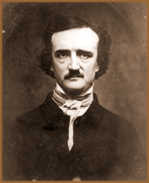
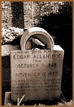

Edgar Allan Poe nasceu em
Boston, no dia 19 de Janeiro de 1809. Seu avô David
Poe participou da Guerra da Independência, e seu pai
(também chamado David Poe) apaixonou-se pela atriz
inglesa Elisabeth Arnold, casando-se com ela. Edgar Allan
Poe teve dois irmãos e seus pais faleceram pouco
tempo depois do nascimento de Rosalie, a filha mais nova
do casal. Assim, Poe foi adotado pelo rico casal John Allan
e Frances Keeling Allan.
Poe
estudou em Londres na Stoke-Newington; algum tempo depois
continuou seus estudos de volta a Richmond, na Universidade
Charlotteville. Allan Poe, apesar de muito inteligente era
também muito genioso. Era um jovem aventureiro, romântico,
orgulhoso e idealista.
Poe continua seus estudos em Virgínia,
mas acaba largando os estudos, em razão de suas dívidas,
já que era um boêmio que vivia no luxo, se
entregando à bebida, ao jogo e às mulheres.
Mais tarde, ingressou no Exército dos Estados Unidos,
onde permanece por dois anos.
Em 1829 sua mãe falece. Logo após,
Poe alista-se na Academia Militar de West Point. Mas com
o lançamento de uma compilação de poesias
em 1831, desliga-se da Academia e corta relações
com seu pai adotivo, devido ao casamento com outra mulher,
o que teria deixado Poe muito contrariado.
Aos 22 anos, vivendo na miséria, publica
Poemas. Já em Baltimore procura pelo irmão
Willian e assiste a morte dele. Allan Poe passa a viver
com uma tia muito pobre e viúva. Durante dois anos
vive em miséria profunda. Mas vence dois concursos
de poesias e o editor Thomaz White entrega-lhe a direção
do "Southern Literary Messenger".
Em 1833 lança Uma aventura sem paralelo
de um certo Hans Pfaal. Dirige a revista por dois anos. Allan
Poe gozava de uma certa reputação com leitores assíduos.
Depois de sua vida estabilizada, aos 27 anos casa-se com sua prima
de 13 anos, Virgínia Clemn. No ano de 1838 trabalha na
Button’s Gentleman Magazine na companhia de sua esposa.
O casal vivera na Filadélfia, Nova York e Fordham. Em 1847,
sofre com a morte de sua esposa vitimada pela tuberculose.
Em 1845, Allan Poe lança O Corvo.
Eureka e Romance Cosmogônico lhe
atribuem a fama necessária para provocar a censura
da imprensa e da sociedade. Desiludido, volta para Richmore
e depois vai para Nova York e entrega-se à bebida.
Antes de seguir para a Filadélfia, resolve encontrar-se
com velhos amigos. Na manhã seguinte, Poe é
encontrado por um amigo em estado de profundo desespero,
largado numa taberna sórdida, de onde o transportaram
imediatamente para um hospital. Estava inconsciente e moribundo.
Ali permaneceu, delirando e chamando repetidamente por um
misterioso "Reynolds", até morrer, na manhã
do domingo seguinte, aos 40 anos e deixando uma vasta obra
em sua vida de sacrifícios e desordem. Era 7 de outubro
de 1849, e os Estados Unidos perdiam um de seus maiores
escritores. Até hoje não se sabe ao certo
o que tenha acontecido naquela noite. Teria o autor, sido
vítima da loucura que em tantos contos narrou? Muitos
afirmam que tenha sido vítima de uma quadrilha que
o envenenou, mas o mais certo é que tenha tido uma
overdose de ópio.
Poe
escreveu novelas, contos e poemas, exercendo larga influência
em autores fundamentais como Baudelaire,
Maupassant e Dostoievski. Mas admite-se que seu maior talento
era em escrever contos. Escreveu contos de horror ou "gótico"
e contos analíticos, policiais. Os contos de horror apresentam
invariavelmente personagens doentias, obsessivas, fascinadas pela
morte, vocacionadas para o crime, dominadas por maldições
hereditárias, seres que oscilam entre a lucidez e a loucura,
vivendo numa espécie de transe, como espectros assustadores
de um terrível pesadelo. Entre os contos, destacam-se O
gato preto, Ligéia, Coração
denunciador, A queda da casa de Usher, O poço
e o pêndulo, Berenice e O barril de amontillado.
Os contos analíticos, de raciocínio ou policiais,
entre os quais figuram os antológicos Assassinato de
Maria Roget, Os crimes da Rua Morgue e A carta
roubada, ao contrário dos contos de horror, primam
pela lógica rigorosa e pela dedução intelectual
que permitem o desvendamento de crimes misteriosos.
Em seus contos, Poe se concentrava no terror psicológico,
vindo do interior de seus personagens ao contrário dos
demais autores que se concentravam no terror externo, no terror
visual se valendo apenas de aspectos ambientais.
Geralmente, os personagens sofriam de um terror
avassalador, fruto de suas próprias fobias e pesadelos,
que quase sempre eram um retrato do próprio autor, que
sempre teve sua vida regida por um cruel e terrível destino.
Nenhum de seus contos é narrado em terceira pessoa, desse
modo, vê-se como realmente é sempre "ele"
que vê, que sente, que ouve e que vive o mais profundo e
escandente terror. São relatos em que o delírio
do personagem se mistura de tal maneira à realidade que
não se consegue mais diferenciar se o perigo é concreto
ou se trata apenas de ilusões produzidas por uma mente
atormentada.
Em quase todos os contos, sempre há um mergulho,
em certas profundezas da alma humana, em certos estados mórbidos
da mente, em recônditos desvãos do subconsciente.
Por esses aspectos a psicanálise lança-se ao estudo
da obra de Poe, já que a mesma possui uma grande leva de
exemplos que ilustram suas demonstrações. Independentemente
desse aspecto, sua obra é lembrada pelo talento narrativo
impressionante e impressivo, pela força criadora monumental
e pela realização artística invejável,
fazendo com que Edgar Allan Poe seja considerado um dos maiores
autores de contos de terror.
Por Spectrum
Obras
Disponíveis:
Contos (Downloads)